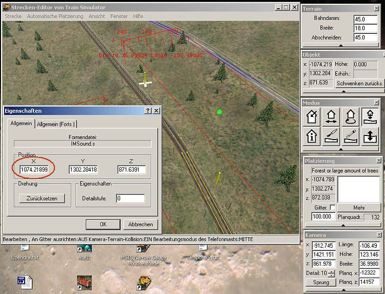
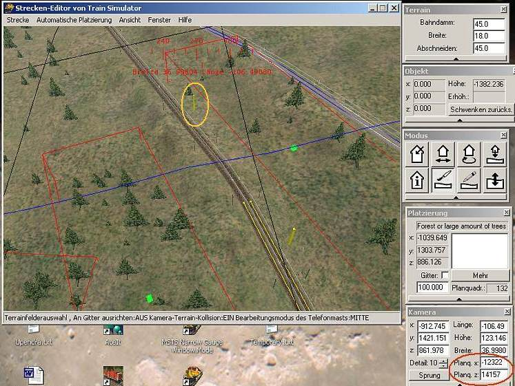
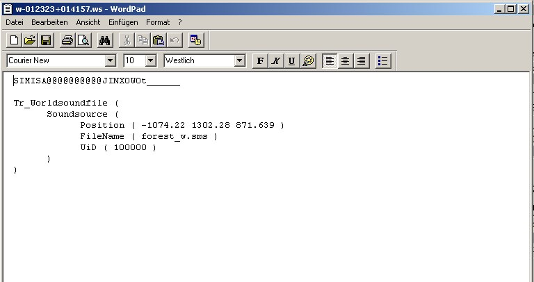

When I wanted to equip the sidings on one of the narrow gauge routes with SoundSources, i.e. ambient sounds you hear in the outside views, I got a bit lazy and just hovered over one of the tiles, and pointed my mouse as far as it would go to place SoundSources along the track, both on the actual world file (tile) I was hovering over, and on the adjacent tiles.
When I accidentally right-clicked my mouse, the properties tab of the SoundSource I had just placed showed up, and one of the figures in the window for the coordinates caught my eyes:

Now we know that while the y-coordinate gives you the elevation of an object above sea level, the x- and z-coordinates give you the location of an object in relation to the tile it is placed on. With tiles being 2048x2048 metres in size, an x and z coordinate can range anywhere between -1024 and +1024 metres. However, I see an illegal value of 1074.219 for my sound source.
The reason is fairly obvious when I turn on the terrain grid, with the blue line condfirming my assumption that the marked SoundSource is actually on an adjacent tile. Namely, as I am hovering over tile w-012322+014157.w, the SoundSource is on w-012323+014157.w.

Now, I have repeatedly placed simple scenery objects on either side of a tile boundary while sitting firmly on only one of the involved tiles, and when it comes to .w file entries for scenery items, MSTS has always correctly calculated the coordinates of objects that ended up on adjacent tiles. However this is not the case with SoundSources, which get saved in .ws (world sound) files instead.
After saving my changes (newly placed SoundSources) to the route, I still got the illegal coordinate showing up in the tab, and a quick look at the w-012323+014157.ws file told me that the SoundSource got saved - with the illegal value the x-coordinate acquired when I placed it "across the blue line".

It then occured to me that I had probably corrupted various SoundSource entries over the past days, as I had been placing sounds in the same way (hovering over one spot and putting them as far as possible) all along the 60 miles of track. A quick look into some .ws files, and yes, I immediately found other illegal coordinates, sometimes even up in the 1400 / 1500 metre range instead of the allowed maximum of 1024 metres.
It then also struck me like the proverbial bolt of lightning that over the past few days I had repeatedly crashed - both the RE and the Sim - in those areas where I had installed sounds. Incidentally, these crashes suddenly started appearing way more often than before, namely:
- in RE when "flying" along the line and crossing the spots where MSTS RE loads objects on the upcoming tiles ahead, and
- in the sim when using the #4 camera that pans along the train, where MSTS also started hanging, with my drive frantically grinding trying to load some object.
Sorry to shout but: Of course the obvious is true - the principal reason for these crashes was nothing else but the illegal values in one or both of the x & z coordinates of some SoundSources the sim tried in vain to load - or release from memory?